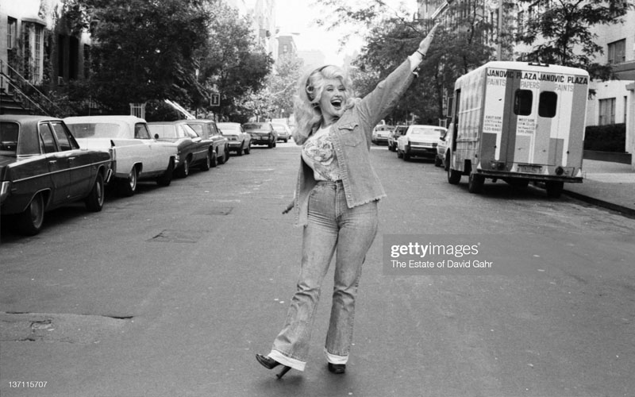
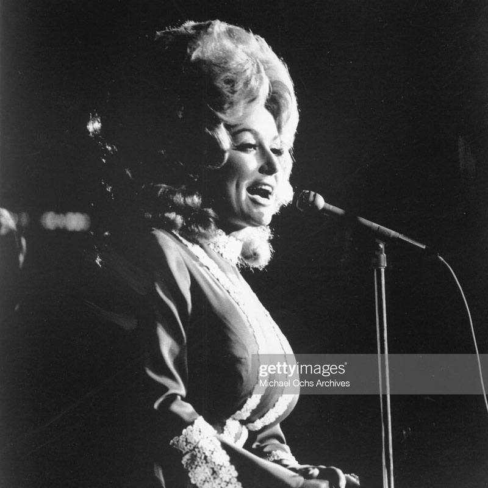
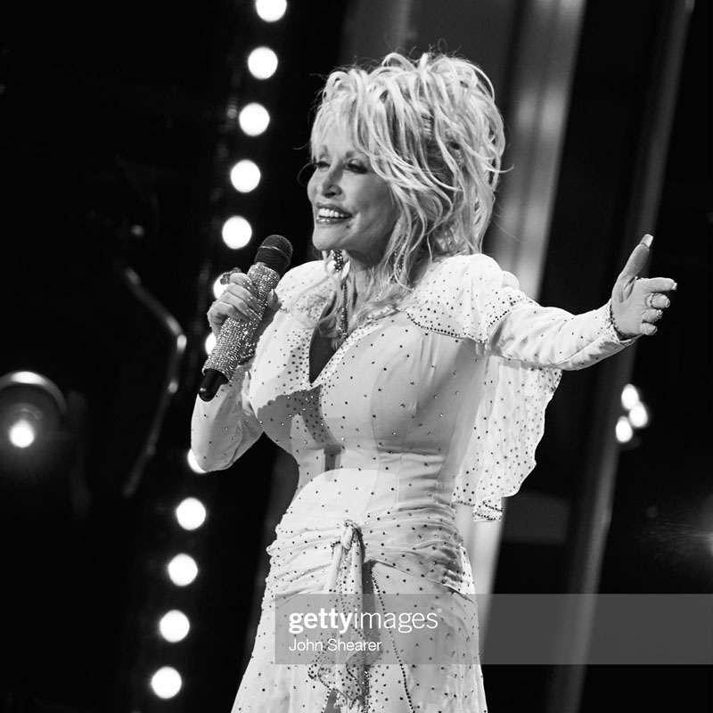
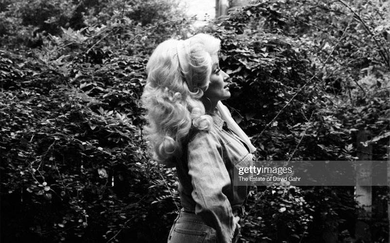
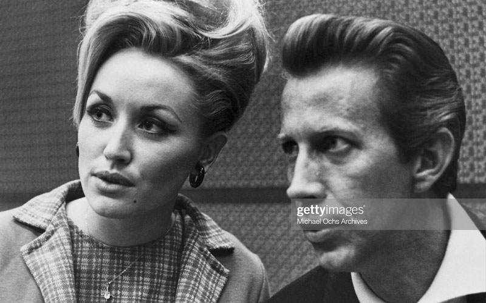
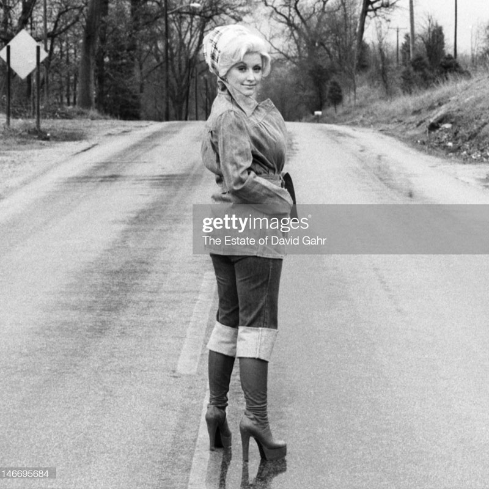
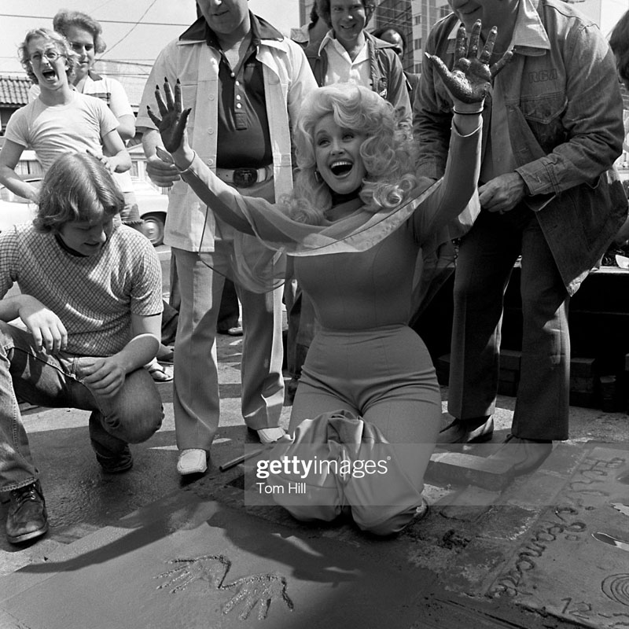
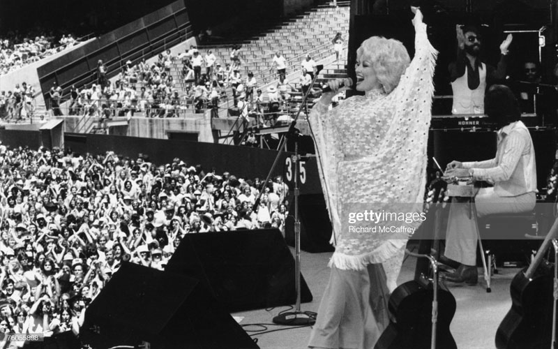

Dolly Partons net worth is a huge $600 Million!
Dolly might call herself a “backwards Barbie” but she’s definately all brains!
The first mammal to be successfully cloned back in 1996 was a sheep at The Roslin Institute in Scotland.
The DNA used to clone the sheep was taken from the mammary cell.
From this she was named after Dolly Parton!
Dolly has been happily married for 54 years to husband, Carl Dean.
They met outside a Wishy Washy Laundromat in Nashville when they were both in their early 20s.
Dean has only seen Dolly perform a number of times and doesn’t join her on tour.
Carl is rarely seen out with Dolly, but he appears on Parton’s forth album cover
“My Blue Ridge Mountain Boy”.